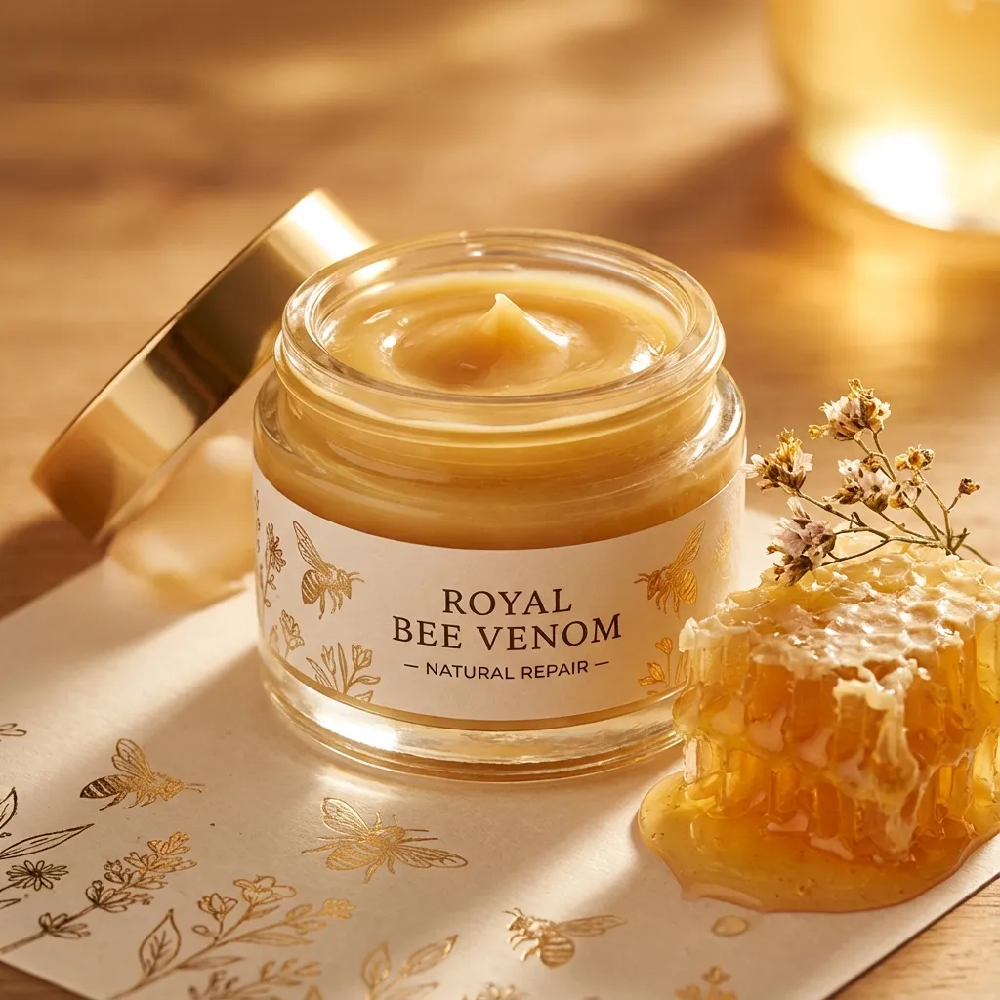
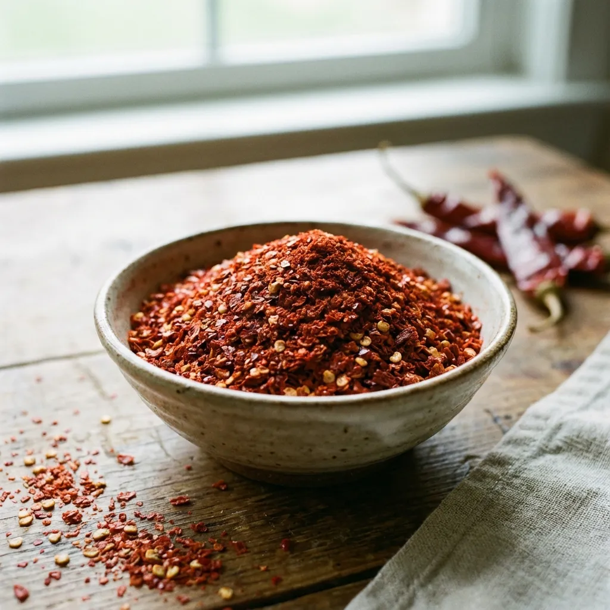
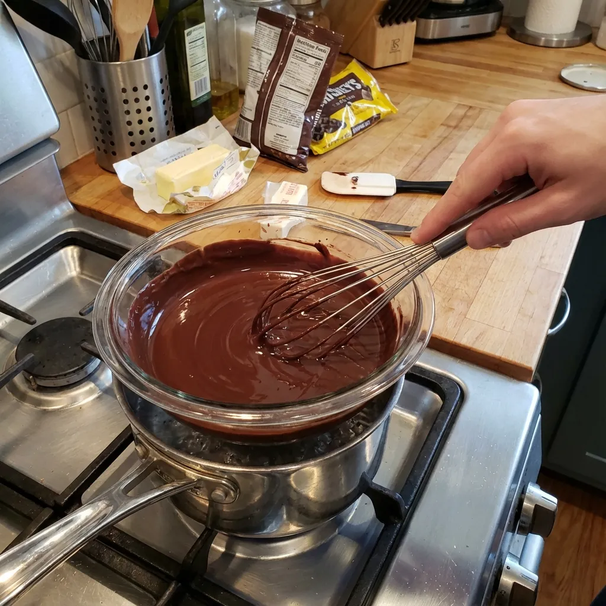

Bienvenido a NutriSalud
Descubre el poder de la nutrición consciente, recetas saludables y alternativas naturales para una vida más equilibrada y llena de energía
Explora Nuestras Categorías
Recetas Saludables
Aprende a cocinar recetas nutritivas con ingredientes naturales y alternativas a productos procesados
8 artículosSuplementos y Nutrición
Explora suplementos naturales, vitaminas y nutrientes esenciales para optimizar tu salud
7 artículosCremas y Productos Tópicos
Descubre cremas naturales y productos tópicos para el cuidado de la piel, articulaciones y bienestar general
6 artículos
La Gran Guía de Suplementación
El manual definitivo para optimizar tu salud, mejorar tu rendimiento y aprender a suplementarte con base científica.
Ver en AmazonExplora por Temas
Artículos Destacados
Gominolas de Vinagre de Manzana
Descubre los beneficios de las gominolas de vinagre de manzana, una forma deliciosa y práctica de aprovechar las propiedades del vinagre...
Triple Magnesio

El triple magnesio combina tres formas biodisponibles de magnesio para una absorción óptima y beneficios integrales para tu salud...
Crema con Veneno de Abeja

Las cremas con veneno de abeja han ganado popularidad por sus propiedades antiinflamatorias y regeneradoras naturales...
Hoja de Morera
La hoja de morera es un superalimento tradicional con propiedades reguladoras del azúcar en sangre y beneficios antioxidantes...
Gochugaru

El gochugaru, chile coreano en copos, añade sabor picante y beneficios metabólicos a tus platos saludables...
Chocolates con Almendras

Los chocolates con almendras combinan el placer del chocolate oscuro con los beneficios nutritivos de las almendras...